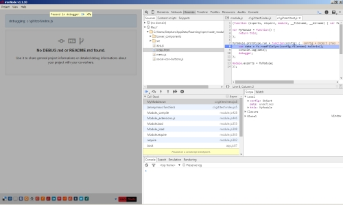

Try A Different Node.js Debug Experience
About
Have you ever thought...
I want debug this JavaScript. Now, easy, fast and stable.
Try the new taste on Linux, OS X and Windows.
Installation
$ npm install iron-node -g
Usage
$ iron-node my-javascript-file.js
Screenshots

Very simple demo
Share
Support us
Donate us a dog biscuit
iron
Node